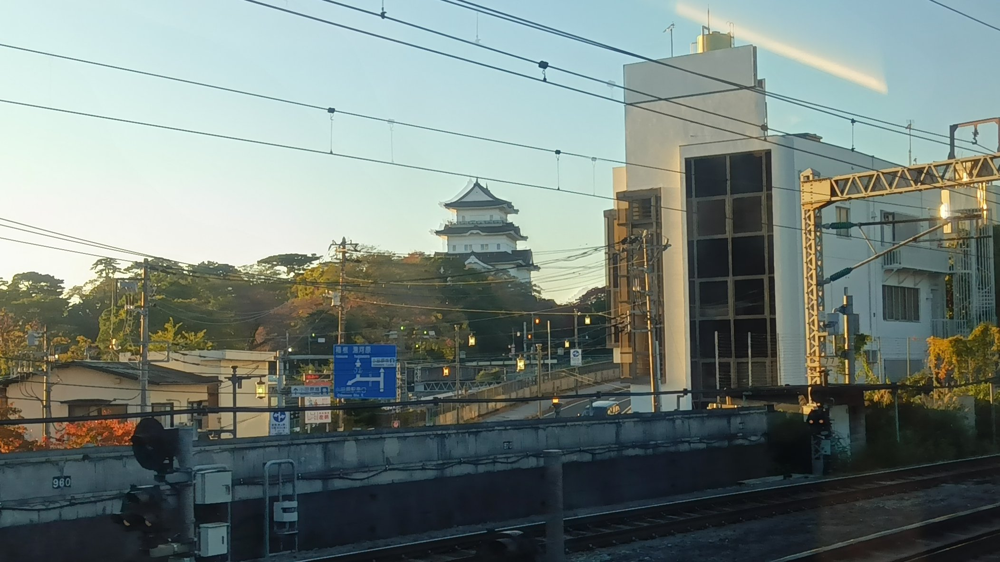
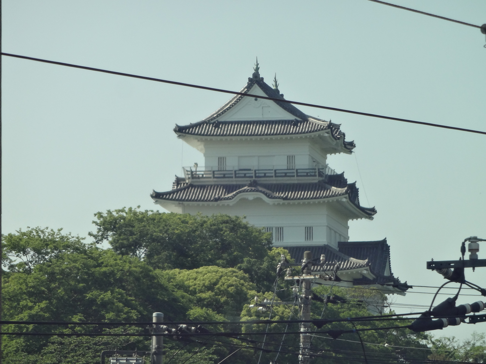

TOKAIDO SHINKANSEN WINDOW VIEW
When can you see Odawara Castle from the Shinkansen?
A castle in a blink.

- Section
- Around Odawara Sta.
- Seat side
- Seat A · sea side
- Timing
- About 31 minutes after leaving Tokyo on a Nozomi train
- Photos
- 2 photos
View on map
Opening the map connects to OpenStreetMap.
How to find Odawara Castle
Around Odawara Station, Odawara Castle flashes by on the Seat A side. On Nozomi services that pass through without stopping, the moment is astonishingly short: a small mark at the beginning of the journey.
If you are traveling from Tokyo toward Shin-Osaka, start watching the Seat A · sea side window as you approach Odawara Sta.. If you are traveling toward Tokyo, the order is reversed.
Why this view matters
Odawara Castle is one of the window views that make the Tokaido Shinkansen more than a transfer. The train moves fast, so visibility depends on weather, seat position, and timing.
Odawara Castle in photos
